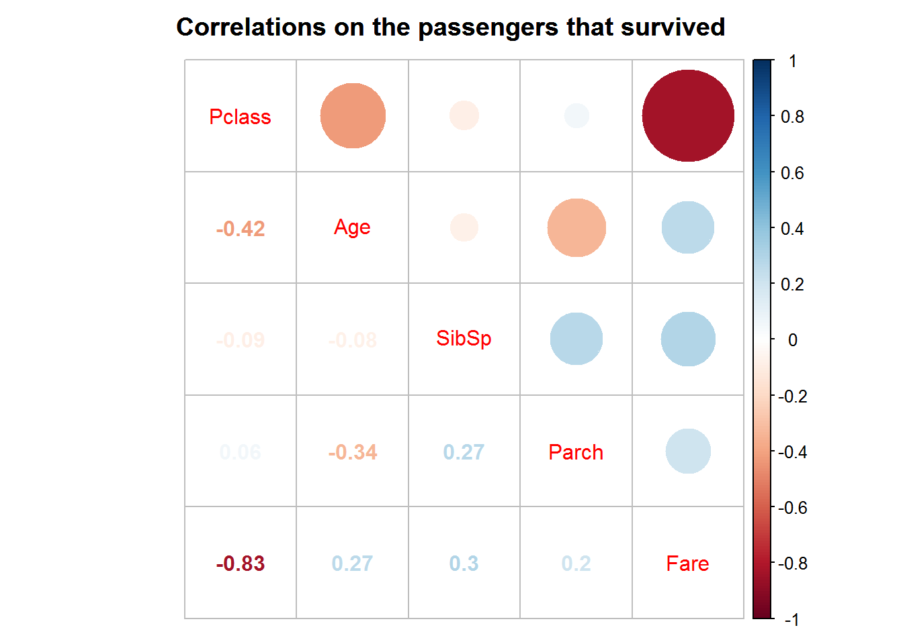
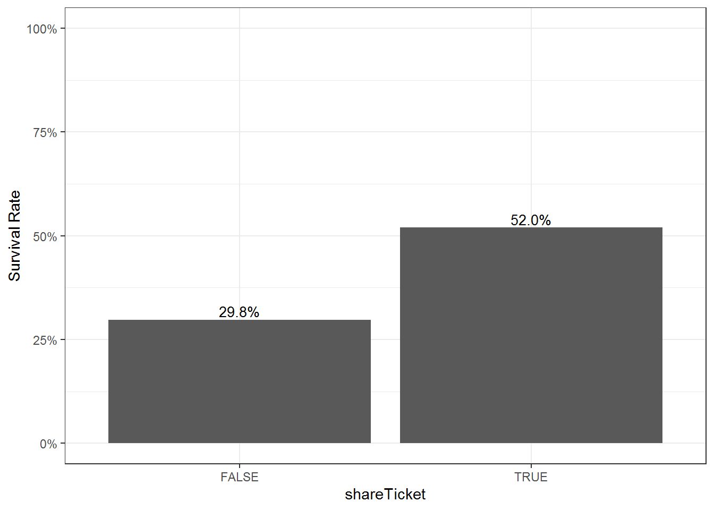

Exploratory Data Analysis on Titanic Surivival
2019-11-05
1 Preparations
1.1 Load libraries
1.2 Read data
## Parsed with column specification:
## cols(
## PassengerId = col_double(),
## Survived = col_double(),
## Pclass = col_double(),
## Name = col_character(),
## Sex = col_character(),
## Age = col_double(),
## SibSp = col_double(),
## Parch = col_double(),
## Ticket = col_character(),
## Fare = col_double(),
## Cabin = col_character(),
## Embarked = col_character()
## )2 Glance at data
2.1 Data structure
## # A tibble: 891 x 12
## PassengerId Survived Pclass Name Sex Age SibSp Parch Ticket Fare
## <dbl> <dbl> <dbl> <chr> <chr> <dbl> <dbl> <dbl> <chr> <dbl>
## 1 1 0 3 Brau~ male 22 1 0 A/5 2~ 7.25
## 2 2 1 1 Cumi~ fema~ 38 1 0 PC 17~ 71.3
## 3 3 1 3 Heik~ fema~ 26 0 0 STON/~ 7.92
## 4 4 1 1 Futr~ fema~ 35 1 0 113803 53.1
## 5 5 0 3 Alle~ male 35 0 0 373450 8.05
## 6 6 0 3 Mora~ male NA 0 0 330877 8.46
## 7 7 0 1 McCa~ male 54 0 0 17463 51.9
## 8 8 0 3 Pals~ male 2 3 1 349909 21.1
## 9 9 1 3 John~ fema~ 27 0 2 347742 11.1
## 10 10 1 2 Nass~ fema~ 14 1 0 237736 30.1
## # ... with 881 more rows, and 2 more variables: Cabin <chr>,
## # Embarked <chr>## Observations: 891
## Variables: 12
## $ PassengerId <dbl> 1, 2, 3, 4, 5, 6, 7, 8, 9, 10, 11, 12, 13, 14, 15,...
## $ Survived <dbl> 0, 1, 1, 1, 0, 0, 0, 0, 1, 1, 1, 1, 0, 0, 0, 1, 0,...
## $ Pclass <dbl> 3, 1, 3, 1, 3, 3, 1, 3, 3, 2, 3, 1, 3, 3, 3, 2, 3,...
## $ Name <chr> "Braund, Mr. Owen Harris", "Cumings, Mrs. John Bra...
## $ Sex <chr> "male", "female", "female", "female", "male", "mal...
## $ Age <dbl> 22, 38, 26, 35, 35, NA, 54, 2, 27, 14, 4, 58, 20, ...
## $ SibSp <dbl> 1, 1, 0, 1, 0, 0, 0, 3, 0, 1, 1, 0, 0, 1, 0, 0, 4,...
## $ Parch <dbl> 0, 0, 0, 0, 0, 0, 0, 1, 2, 0, 1, 0, 0, 5, 0, 0, 1,...
## $ Ticket <chr> "A/5 21171", "PC 17599", "STON/O2. 3101282", "1138...
## $ Fare <dbl> 7.2500, 71.2833, 7.9250, 53.1000, 8.0500, 8.4583, ...
## $ Cabin <chr> NA, "C85", NA, "C123", NA, NA, "E46", NA, NA, NA, ...
## $ Embarked <chr> "S", "C", "S", "S", "S", "Q", "S", "S", "S", "C", ...2.2 Number of distinct values for each variable
Make use of n_distinct
# Count by summarize_all
titanic %>%
summarize_all(n_distinct) %>%
gather(key = "variable",value="Unique")## # A tibble: 12 x 2
## variable Unique
## <chr> <int>
## 1 PassengerId 891
## 2 Survived 2
## 3 Pclass 3
## 4 Name 891
## 5 Sex 2
## 6 Age 89
## 7 SibSp 7
## 8 Parch 7
## 9 Ticket 681
## 10 Fare 248
## 11 Cabin 148
## 12 Embarked 42.3 Missing rate for each variable
# Count by summarize_all
titanic %>%
summarize_all(list(~sum(is.na(.))/n())) %>%
gather(key = "variable",value="missingRate")## # A tibble: 12 x 2
## variable missingRate
## <chr> <dbl>
## 1 PassengerId 0
## 2 Survived 0
## 3 Pclass 0
## 4 Name 0
## 5 Sex 0
## 6 Age 0.199
## 7 SibSp 0
## 8 Parch 0
## 9 Ticket 0
## 10 Fare 0
## 11 Cabin 0.771
## 12 Embarked 0.00224# Create a bar chart to display it
titanic %>%
summarize_all(list(~sum(is.na(.))/n())) %>%
gather(key = "variable",value="missingRate") %>%
ggplot(aes(variable,missingRate))+
geom_bar(stat="identity",fill="red")+
theme_bw()
2.4 Create a variable SurvivedLabel as a factor of Survival
## # A tibble: 891 x 12
## PassengerId Survived Pclass Name Sex Age SibSp Parch Ticket Fare
## <dbl> <dbl> <dbl> <chr> <chr> <dbl> <dbl> <dbl> <chr> <dbl>
## 1 1 0 3 Brau~ male 22 1 0 A/5 2~ 7.25
## 2 2 1 1 Cumi~ fema~ 38 1 0 PC 17~ 71.3
## 3 3 1 3 Heik~ fema~ 26 0 0 STON/~ 7.92
## 4 4 1 1 Futr~ fema~ 35 1 0 113803 53.1
## 5 5 0 3 Alle~ male 35 0 0 373450 8.05
## 6 6 0 3 Mora~ male NA 0 0 330877 8.46
## 7 7 0 1 McCa~ male 54 0 0 17463 51.9
## 8 8 0 3 Pals~ male 2 3 1 349909 21.1
## 9 9 1 3 John~ fema~ 27 0 2 347742 11.1
## 10 10 1 2 Nass~ fema~ 14 1 0 237736 30.1
## # ... with 881 more rows, and 2 more variables: Cabin <chr>,
## # Embarked <chr>3 Survival for each variable
3.1 Overall
Count the number and proportion of survived passengers.
# Step 1: group_by SurvivedLabel
# Step 2: summarise count using count=n()
# Step 3: mutate to find the proportion, count/sum(count)
titanic %>%
group_by(SurvivedLabel) %>%
summarise(count=n()) %>%
mutate(prop=count/sum(count))## # A tibble: 2 x 3
## SurvivedLabel count prop
## <fct> <int> <dbl>
## 1 0 549 0.616
## 2 1 342 0.3843.2 Pclass
Ticket class.
# Use summarise and n() to count each Pclass
# as well as mean() to compute the survival rate
# Step 1: group_by
# Step 2: summarise
titanic %>%
group_by(Pclass) %>%
summarise(sur=mean(Survived),
count=n())## # A tibble: 3 x 3
## Pclass sur count
## <dbl> <dbl> <int>
## 1 1 0.630 216
## 2 2 0.473 184
## 3 3 0.242 491# Bar chart for the surival rate
titanic %>%
group_by(Pclass) %>%
summarise(sur=mean(Survived)) %>%
ggplot(aes(Pclass,sur)) +
geom_bar(stat="identity")+
geom_text(aes(label=scales::percent(sur,
accuracy=0.1,
suffix="%") ),
size=3.5,vjust=-0.25,
position = position_dodge(width = 0.9))+
scale_y_continuous(labels = scales::percent, limits = c(0,1))+
labs(y="Survival Rate")+
theme_bw()3.3 Sex
# Use summarise and n() to count each Sex
# as well as mean() to compute the survival rate
# Step 1: group_by
# Step 2: summarise
titanic %>%
group_by(Sex) %>%
summarise(sur=mean(Survived),
count=n())## # A tibble: 2 x 3
## Sex sur count
## <chr> <dbl> <int>
## 1 female 0.742 314
## 2 male 0.189 577# Bar chart for the surival rate
titanic %>%
group_by(Sex) %>%
summarise(sur=mean(Survived)) %>%
ggplot(aes(Sex,sur)) +
geom_bar(stat="identity")+
geom_text(aes(label=scales::percent(sur,
accuracy=0.1,
suffix="%") ),
size=3.5,vjust=-0.25,
position = position_dodge(width = 0.9))+
scale_y_continuous(labels = scales::percent, limits = c(0,1))+
labs(y="Survival Rate")+
theme_bw()3.4 Age
Use SurvivedLabel as a group indicator in boxplot.
Notice that there are many missing values.
## `stat_bin()` using `bins = 30`. Pick better value with `binwidth`.3.5 SibSp
Number of siblings / spouses aboard the Titanic. The survival rate within each group indicate that the survival rate drops for people with higher SibSp except for people who had no siblings.
# Use summarise and n() to count each SibSp
# as well as mean() to compute the survival rate
# Step 1: group_by
# Step 2: summarise
titanic %>%
group_by(SibSp) %>%
summarise(sur=mean(Survived),
count=n())## # A tibble: 7 x 3
## SibSp sur count
## <dbl> <dbl> <int>
## 1 0 0.345 608
## 2 1 0.536 209
## 3 2 0.464 28
## 4 3 0.25 16
## 5 4 0.167 18
## 6 5 0 5
## 7 8 0 73.6 Parch
Number of parents / children aboard the Titanic.
# Use summarise and n() to count each Parch
# as well as mean() to compute the survival rate
# Step 1: group_by
# Step 2: summarise
titanic %>%
group_by(Parch) %>%
summarise(sur=mean(Survived),
count=n())## # A tibble: 7 x 3
## Parch sur count
## <dbl> <dbl> <int>
## 1 0 0.344 678
## 2 1 0.551 118
## 3 2 0.5 80
## 4 3 0.6 5
## 5 4 0 4
## 6 5 0.2 5
## 7 6 0 13.7 Fare
Passenger fare.
3.8 Embarked
Port of Embarkation.
# Use summarise and n() to count each Embarked
# as well as mean() to compute the survival rate
# Step 1: group_by
# Step 2: summarise
titanic %>%
group_by(Embarked) %>%
summarise(sur=mean(Survived),
count=n())## # A tibble: 4 x 3
## Embarked sur count
## <chr> <dbl> <int>
## 1 C 0.554 168
## 2 Q 0.390 77
## 3 S 0.337 644
## 4 <NA> 1 2# Bar chart for the surival rate
titanic %>%
group_by(Embarked) %>%
summarise(sur=mean(Survived)) %>%
ggplot(aes(Embarked,sur)) +
geom_bar(stat="identity")+
geom_text(aes(label=scales::percent(sur,
accuracy=0.1,
suffix="%") ),
size=3.5,vjust=-0.25,
position = position_dodge(width = 0.9))+
scale_y_continuous(labels = scales::percent, limits = c(0,1))+
labs(y="Survival Rate")+
theme_bw()3.9 Sex and Pclass
# Survival rates and counts for the combinations of Sex and Pclass
# Use mutate(SexPclass=paste0(Sex,"_",Pclass))
# to create an interaction variable
titanic %>%
group_by(Sex,Pclass) %>%
summarise(sur=mean(Survived),
count=n()) %>%
ungroup() %>%
mutate(SexPclass=paste0(Sex,"_",Pclass))## # A tibble: 6 x 5
## Sex Pclass sur count SexPclass
## <chr> <dbl> <dbl> <int> <chr>
## 1 female 1 0.968 94 female_1
## 2 female 2 0.921 76 female_2
## 3 female 3 0.5 144 female_3
## 4 male 1 0.369 122 male_1
## 5 male 2 0.157 108 male_2
## 6 male 3 0.135 347 male_34 Others
4.1 Correlation
Find Spearman Ranks correlations among
Survived, Pclass, Age, SibSp, Parch, Fare.
Hint: Use cor(use="complete.obs", method = "spearman").
## corrplot 0.84 loaded# Step 1: Use select to keep the columns: Survived, Pclass, Age, SibSp, Parch, Fare
# Correlations on all the passengers
titanic %>%
select(Survived,Pclass,Age, SibSp, Parch, Fare) %>%
cor(use="complete.obs", method = "spearman") %>%
corrplot.mixed(main="Correlations on all the passengers",
mar = c(0, 0, 2, 0))# Step 1: Use filter to keep observations with Survivied==1
# Step 2: Use select to keep the columns: Pclass, Age, SibSp, Parch, Fare
# Correlations on the passengers that survived
titanic %>%
filter(Survived==1) %>%
select(Pclass, Age, SibSp, Parch, Fare) %>%
cor(use="complete.obs", method = "spearman") %>%
corrplot.mixed(main="Correlations on the passengers that survived",
mar = c(0, 0, 2, 0))
# Step 1: Use filter to keep observations with Survivied==0
# Step 2: Use select to keep the columns: Pclass, Age, SibSp, Parch, Fare
# Correlations on the passengers that did not survive
titanic %>%
filter(Survived==0) %>%
select(Pclass, Age, SibSp, Parch, Fare) %>%
cor(use="complete.obs", method = "spearman") %>%
corrplot.mixed(main="Correlations on the passengers that did not survive",
mar = c(0, 0, 2, 0))4.2 Pairwise plot
Create a pairwise plot for variables including SurvivedLabel, Pclass, Sex, Age, SibSp, Parch, Fare, Embarked.
##
## Attaching package: 'GGally'## The following object is masked from 'package:dplyr':
##
## nasa# Step 1: Convert Pclass to a factor
# Step 2: Use select to keep the above mentioned columns
# Step 3: do ggpairs()
titanic %>%
mutate(Pclass=factor(Pclass)) %>%
select(SurvivedLabel, Pclass, Sex, Age,
SibSp, Parch, Fare, Embarked) %>%
ggpairs()## `stat_bin()` using `bins = 30`. Pick better value with `binwidth`.## `stat_bin()` using `bins = 30`. Pick better value with `binwidth`.
## `stat_bin()` using `bins = 30`. Pick better value with `binwidth`.
## `stat_bin()` using `bins = 30`. Pick better value with `binwidth`.
## `stat_bin()` using `bins = 30`. Pick better value with `binwidth`.
## `stat_bin()` using `bins = 30`. Pick better value with `binwidth`.
## `stat_bin()` using `bins = 30`. Pick better value with `binwidth`.
## `stat_bin()` using `bins = 30`. Pick better value with `binwidth`.
## `stat_bin()` using `bins = 30`. Pick better value with `binwidth`.
## `stat_bin()` using `bins = 30`. Pick better value with `binwidth`.
## `stat_bin()` using `bins = 30`. Pick better value with `binwidth`.
## `stat_bin()` using `bins = 30`. Pick better value with `binwidth`.
## `stat_bin()` using `bins = 30`. Pick better value with `binwidth`.
## `stat_bin()` using `bins = 30`. Pick better value with `binwidth`.
## `stat_bin()` using `bins = 30`. Pick better value with `binwidth`.
## `stat_bin()` using `bins = 30`. Pick better value with `binwidth`.5 Feature Engineering on the titanicing Set
What variable can we add?
5.1 Discretize Age
Use the function cut.
## Min. 1st Qu. Median Mean 3rd Qu. Max. NA's
## 0.42 20.12 28.00 29.70 38.00 80.00 177titanic <- titanic %>%
mutate(age_bin=cut(Age, breaks = c(0,18,60,80),
labels=c("children","adult","senior"),
include.lowest = TRUE)) %>%
mutate(age_bin=addNA(age_bin))
titanic %>% select(Age,age_bin) %>% print(n=2)## # A tibble: 891 x 2
## Age age_bin
## <dbl> <fct>
## 1 22 adult
## 2 38 adult
## # ... with 889 more rows## [1] "children" "adult" "senior" NA# Barplot of survival rate for each age_bin
titanic %>%
group_by(age_bin) %>%
summarize(sur=mean(Survived)) %>%
ggplot(aes(x=age_bin,y=sur))+
geom_bar(stat="identity")+
geom_text(aes(label=scales::percent(sur,
accuracy=0.1,
suffix="%") ),
size=3.5,vjust=-0.25,
position = position_dodge(width = 0.9))+
scale_y_continuous(labels = scales::percent, limits = c(0,1))+
labs(y="Survival Rate")+
theme_bw()5.2 Discretize Fare
Use the function cut.
# create fare_cut by cutting Fare into c("low","medium","high")
# using the first quantile and the third quantile
summary(titanic$Fare)## Min. 1st Qu. Median Mean 3rd Qu. Max.
## 0.00 7.91 14.45 32.20 31.00 512.33titanic <- titanic %>%
mutate(fare_bin=cut(Fare, breaks = c(0,8,31,550),
labels=c("low","medium","high"),
include.lowest = TRUE))
titanic %>% select(Fare,fare_bin) %>% print(n=5)## # A tibble: 891 x 2
## Fare fare_bin
## <dbl> <fct>
## 1 7.25 low
## 2 71.3 high
## 3 7.92 low
## 4 53.1 high
## 5 8.05 medium
## # ... with 886 more rows# Barplot of survival rate for each fare_bin
titanic %>%
group_by(fare_bin) %>%
summarize(sur=mean(Survived)) %>%
ggplot(aes(x=fare_bin,y=sur))+
geom_bar(stat="identity")+
geom_text(aes(label=scales::percent(sur,
accuracy=0.1,
suffix="%") ),
size=3.5,vjust=-0.25,
position = position_dodge(width = 0.9))+
scale_y_continuous(labels = scales::percent, limits = c(0,1))+
labs(y="Survival Rate")+
theme_bw()5.3 Family size
Family size = SibSp + Parch
# Add the variable FamilySize
titanic <- titanic %>%
mutate(FamilySize=SibSp + Parch)
# Use summarise and n() to count each FamilySize
# as well as mean() to compute the survival rate
# Step 1: group_by
# Step 2: summarise
titanic %>%
group_by(FamilySize) %>%
summarise(sur=mean(Survived),
count=n())## # A tibble: 9 x 3
## FamilySize sur count
## <dbl> <dbl> <int>
## 1 0 0.304 537
## 2 1 0.553 161
## 3 2 0.578 102
## 4 3 0.724 29
## 5 4 0.2 15
## 6 5 0.136 22
## 7 6 0.333 12
## 8 7 0 6
## 9 10 0 7# Bar chart for the surival rate for each FamilySize
titanic %>%
group_by(FamilySize) %>%
summarise(sur=mean(Survived)) %>%
ggplot(aes(FamilySize,sur)) +
geom_bar(stat="identity")+
geom_text(aes(label=scales::percent(sur,
accuracy=0.1,
suffix="%") ),
size=3.5,vjust=-0.25,
position = position_dodge(width = 0.9))+
scale_y_continuous(labels = scales::percent, limits = c(0,1))+
labs(y="Survival Rate")+
theme_bw()5.4 Single
According to the family size,
we can create a variable single which is TRUE if FamilySize<1.
# Add the variable Single
titanic <- titanic %>%
mutate(Single= FamilySize<1)
# Use summarise and n() to count by Single
# as well as mean() to compute the survival rate
# Step 1: group_by
# Step 2: summarise
titanic %>%
group_by(Single) %>%
summarise(sur=mean(Survived),
count=n())## # A tibble: 2 x 3
## Single sur count
## <lgl> <dbl> <int>
## 1 FALSE 0.506 354
## 2 TRUE 0.304 537# Bar chart for the surival rate by Single
titanic %>%
group_by(Single) %>%
summarise(sur=mean(Survived)) %>%
ggplot(aes(Single,sur)) +
geom_bar(stat="identity")+
geom_text(aes(label=scales::percent(sur,
accuracy=0.1,
suffix="%") ),
size=3.5,vjust=-0.25,
position = position_dodge(width = 0.9))+
scale_y_continuous(labels = scales::percent, limits = c(0,1))+
labs(y="Survival Rate")+
theme_bw()5.5 Tickets
There are 891 obervations in this data set but only 681 unique tikets. So there were passengers with the same ticket. This infomation might help predict the survival rate.
Since there are so many levels for this categorical variable,
we may use the count encoding for Ticket.
# Create a new variable: shareTicket
# Step 1: Group by Ticket
# Step 2: summarise and n() to count the number of passengers for each ticket
# Step 3: Use mutate to create a varaible shareTicket which is TRUE if the ticket was shared by more than one person
# Step 4: Join to the original data set
titanic <- titanic %>%
group_by(Ticket) %>%
summarise(shareTicket=n()) %>%
mutate(shareTicket=shareTicket>1) %>%
right_join(titanic, by ="Ticket")
# Use summarise and n() to count each shareTicket
# as well as mean() to compute the survival rate
# Step 1: group_by
# Step 2: summarise
titanic %>%
group_by(shareTicket) %>%
summarise(sur=mean(Survived),
count=n())## # A tibble: 2 x 3
## shareTicket sur count
## <lgl> <dbl> <int>
## 1 FALSE 0.298 547
## 2 TRUE 0.520 344# Bar chart for the surival rate for each shareTicket
titanic %>%
group_by(shareTicket) %>%
summarise(sur=mean(Survived)) %>%
ggplot(aes(shareTicket,sur)) +
geom_bar(stat="identity")+
geom_text(aes(label=scales::percent(sur,
accuracy=0.1,
suffix="%") ),
size=3.5,vjust=-0.25,
position = position_dodge(width = 0.9))+
scale_y_continuous(labels = scales::percent, limits = c(0,1))+
labs(y="Survival Rate")+
theme_bw()
5.6 Target encoding
Target encoding for Pclass is not useful because the Pclass has too few levels and one can apply the one-hot encoding without any difficulty.
In practice, we do not have the (Survived) labels in the testing set. So we will use the what are learnt in the training set for the categories appear in testing set.
# Create a new variable: surPclass
# Step 1: Group by Pclass
# Step 2: summarise and mean to find the survival ratio for each Pclass
# Step 3: Join to the original data set
# Step 4: Add random noises rnorm(nrow(titanic),sd=0.01) to the
titanic %>%
group_by(Pclass) %>%
summarise(surPclass=mean(Survived)) %>%
right_join(titanic, by ="Pclass") %>%
select(Pclass,surPclass) %>%
mutate(surPclass=surPclass+rnorm(nrow(titanic),sd=0.01)) # add noise## # A tibble: 891 x 2
## Pclass surPclass
## <dbl> <dbl>
## 1 3 0.237
## 2 1 0.628
## 3 3 0.248
## 4 1 0.629
## 5 3 0.240
## 6 3 0.244
## 7 1 0.647
## 8 3 0.256
## 9 3 0.244
## 10 2 0.467
## # ... with 881 more rows6 Predict Survival Rate
We use the logistic regression to model the probability (rate) of survival.
Data are split into the training set and the testing set.
# Convert categories to factors for variables: Pclass, Sex, Single, Embarked
# filter out missing values of Embarked
# select columns: SurvivedLabel, Pclass, Sex, age_bin, fare_bin, Embarked
# Assign to a new R object, titanic2
titanic2 <- titanic %>%
mutate(Pclass=factor(Pclass), Sex=factor(Sex),
Single=factor(Single),Embarked=factor(Embarked)) %>%
filter(!is.na(Embarked)) %>%
select(SurvivedLabel, Pclass, Sex, Single,age_bin, fare_bin, Embarked)
titanic2## # A tibble: 889 x 7
## SurvivedLabel Pclass Sex Single age_bin fare_bin Embarked
## <fct> <fct> <fct> <fct> <fct> <fct> <fct>
## 1 0 3 male FALSE adult low S
## 2 1 1 female FALSE adult high C
## 3 1 3 female TRUE adult low S
## 4 1 1 female FALSE adult high S
## 5 0 3 male TRUE adult medium S
## 6 0 3 male TRUE <NA> medium Q
## 7 0 1 male TRUE adult high S
## 8 0 3 male FALSE children medium S
## 9 1 3 female FALSE adult medium S
## 10 1 2 female FALSE children medium C
## # ... with 879 more rows# Randomly split into train and test
set.seed(111)
train_idx <- sample(1:nrow(titanic2), size = 500, replace = FALSE)
train <- titanic2[train_idx,]
test <- titanic2[-train_idx,]
# Train logisitc regression model
fit1 <- glm(SurvivedLabel~Pclass+Sex+Single+age_bin+fare_bin+Embarked,
data=train, family = binomial)
# Estimated coefficients and significances
summary(fit1)##
## Call:
## glm(formula = SurvivedLabel ~ Pclass + Sex + Single + age_bin +
## fare_bin + Embarked, family = binomial, data = train)
##
## Deviance Residuals:
## Min 1Q Median 3Q Max
## -2.4928 -0.6540 -0.3768 0.6155 2.7260
##
## Coefficients:
## Estimate Std. Error z value Pr(>|z|)
## (Intercept) 4.5157 0.7689 5.873 4.28e-09 ***
## Pclass2 -1.2712 0.4162 -3.054 0.002259 **
## Pclass3 -2.4474 0.4239 -5.774 7.75e-09 ***
## Sexmale -2.5239 0.2631 -9.592 < 2e-16 ***
## SingleTRUE -0.2873 0.2935 -0.979 0.327586
## age_binadult -0.9151 0.3495 -2.618 0.008841 **
## age_binsenior -3.2875 1.2075 -2.723 0.006479 **
## age_binNA -1.4936 0.4533 -3.295 0.000984 ***
## fare_binmedium -0.4861 0.3778 -1.287 0.198169
## fare_binhigh -0.9888 0.5295 -1.867 0.061850 .
## EmbarkedQ 0.2941 0.5331 0.552 0.581241
## EmbarkedS -0.4657 0.3040 -1.532 0.125529
## ---
## Signif. codes: 0 '***' 0.001 '**' 0.01 '*' 0.05 '.' 0.1 ' ' 1
##
## (Dispersion parameter for binomial family taken to be 1)
##
## Null deviance: 670.50 on 499 degrees of freedom
## Residual deviance: 451.27 on 488 degrees of freedom
## AIC: 475.27
##
## Number of Fisher Scoring iterations: 5# Perform backward stepwise model selection according to the AIC (smaller is better)
fit2 <- step(fit1)## Start: AIC=475.27
## SurvivedLabel ~ Pclass + Sex + Single + age_bin + fare_bin +
## Embarked
##
## Df Deviance AIC
## - Single 1 452.23 474.23
## - fare_bin 2 454.85 474.85
## <none> 451.27 475.27
## - Embarked 2 455.48 475.48
## - age_bin 3 469.44 487.44
## - Pclass 2 488.62 508.62
## - Sex 1 563.78 585.78
##
## Step: AIC=474.23
## SurvivedLabel ~ Pclass + Sex + age_bin + fare_bin + Embarked
##
## Df Deviance AIC
## - fare_bin 2 454.86 472.86
## <none> 452.23 474.23
## - Embarked 2 456.48 474.48
## - age_bin 3 472.61 488.61
## - Pclass 2 488.87 506.87
## - Sex 1 572.85 592.85
##
## Step: AIC=472.86
## SurvivedLabel ~ Pclass + Sex + age_bin + Embarked
##
## Df Deviance AIC
## <none> 454.86 472.86
## - Embarked 2 459.98 473.98
## - age_bin 3 473.51 485.51
## - Pclass 2 497.43 511.43
## - Sex 1 573.88 589.88##
## Call:
## glm(formula = SurvivedLabel ~ Pclass + Sex + age_bin + Embarked,
## family = binomial, data = train)
##
## Deviance Residuals:
## Min 1Q Median 3Q Max
## -2.4510 -0.6891 -0.4373 0.6375 2.4170
##
## Coefficients:
## Estimate Std. Error z value Pr(>|z|)
## (Intercept) 3.4197 0.4582 7.464 8.42e-14 ***
## Pclass2 -0.9470 0.3497 -2.708 0.006762 **
## Pclass3 -1.9294 0.3118 -6.187 6.12e-10 ***
## Sexmale -2.4639 0.2469 -9.980 < 2e-16 ***
## age_binadult -0.8586 0.3275 -2.622 0.008737 **
## age_binsenior -3.2461 1.1941 -2.718 0.006559 **
## age_binNA -1.4251 0.4260 -3.345 0.000823 ***
## EmbarkedQ 0.4133 0.5240 0.789 0.430276
## EmbarkedS -0.4668 0.3046 -1.532 0.125405
## ---
## Signif. codes: 0 '***' 0.001 '**' 0.01 '*' 0.05 '.' 0.1 ' ' 1
##
## (Dispersion parameter for binomial family taken to be 1)
##
## Null deviance: 670.50 on 499 degrees of freedom
## Residual deviance: 454.86 on 491 degrees of freedom
## AIC: 472.86
##
## Number of Fisher Scoring iterations: 5# Predict the survival rates for passengers in the testing set
pred_fit2 <- predict(fit2, newdata = test,
type = "response", se.fit = TRUE)
# Format the predictions
format_pred <- tibble(predSurv=ifelse(pred_fit2$fit>0.5,1,0),
survRate=pred_fit2$fit,
se=pred_fit2$se.fit)
format_pred## # A tibble: 389 x 3
## predSurv survRate se
## <dbl> <dbl> <dbl>
## 1 1 0.928 0.0234
## 2 0 0.0912 0.0207
## 3 0 0.121 0.0469
## 4 1 0.890 0.0311
## 5 0 0.0912 0.0207
## 6 0 0.0912 0.0207
## 7 1 0.736 0.0646
## 8 1 0.759 0.0543
## 9 0 0.363 0.125
## 10 1 0.516 0.107
## # ... with 379 more rows## [1] 0.7994859## Truth
## Prediction 0 1
## 0 210 42
## 1 36 101#------------- Forecasts for all combinations ------------------#
newtest <- expand.grid( Pclass = c("1","2","3"),
Sex = c("male","female"),
age_bin = c("children","adult","senior",NA),
Embarked = c("C","Q","S"))
pred_newtest <- predict(fit2, newdata = newtest,
type = "response")
# Format
as_tibble(newtest) %>%
bind_cols(tibble(survRate=pred_newtest)) %>%
arrange(desc(survRate)) %>%
print(n=100)## # A tibble: 72 x 5
## Pclass Sex age_bin Embarked survRate
## <fct> <fct> <fct> <fct> <dbl>
## 1 1 female children Q 0.979
## 2 1 female children C 0.968
## 3 1 female adult Q 0.951
## 4 1 female children S 0.950
## 5 2 female children Q 0.947
## 6 1 female adult C 0.928
## 7 2 female children C 0.922
## 8 1 female <NA> Q 0.917
## 9 1 female adult S 0.890
## 10 2 female adult Q 0.884
## 11 2 female children S 0.881
## 12 1 female <NA> C 0.880
## 13 3 female children Q 0.870
## 14 2 female adult C 0.834
## 15 1 female <NA> S 0.822
## 16 3 female children C 0.816
## 17 2 female <NA> Q 0.812
## 18 1 male children Q 0.797
## 19 2 female adult S 0.759
## 20 2 female <NA> C 0.740
## 21 3 female adult Q 0.740
## 22 3 female children S 0.736
## 23 1 male children C 0.722
## 24 3 female adult C 0.653
## 25 1 female senior Q 0.643
## 26 2 female <NA> S 0.641
## 27 1 male adult Q 0.625
## 28 1 male children S 0.620
## 29 3 female <NA> Q 0.617
## 30 2 male children Q 0.604
## 31 1 female senior C 0.543
## 32 3 female adult S 0.541
## 33 1 male adult C 0.524
## 34 3 female <NA> C 0.516
## 35 2 male children C 0.502
## 36 1 male <NA> Q 0.486
## 37 1 female senior S 0.427
## 38 2 female senior Q 0.411
## 39 1 male adult S 0.409
## 40 3 female <NA> S 0.401
## 41 2 male adult Q 0.393
## 42 2 male children S 0.387
## 43 1 male <NA> C 0.385
## 44 3 male children Q 0.363
## 45 2 female senior C 0.316
## 46 2 male adult C 0.299
## 47 1 male <NA> S 0.282
## 48 3 male children C 0.274
## 49 2 male <NA> Q 0.268
## 50 2 female senior S 0.224
## 51 2 male adult S 0.211
## 52 3 female senior Q 0.207
## 53 2 male <NA> C 0.195
## 54 3 male adult Q 0.195
## 55 3 male children S 0.191
## 56 3 female senior C 0.147
## 57 3 male adult C 0.138
## 58 1 male senior Q 0.133
## 59 2 male <NA> S 0.132
## 60 3 male <NA> Q 0.121
## 61 3 female senior S 0.0977
## 62 1 male senior C 0.0919
## 63 3 male adult S 0.0912
## 64 3 male <NA> C 0.0833
## 65 1 male senior S 0.0597
## 66 2 male senior Q 0.0560
## 67 3 male <NA> S 0.0539
## 68 2 male senior C 0.0378
## 69 2 male senior S 0.0240
## 70 3 male senior Q 0.0217
## 71 3 male senior C 0.0145
## 72 3 male senior S 0.00913